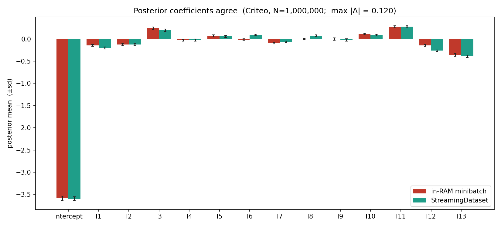
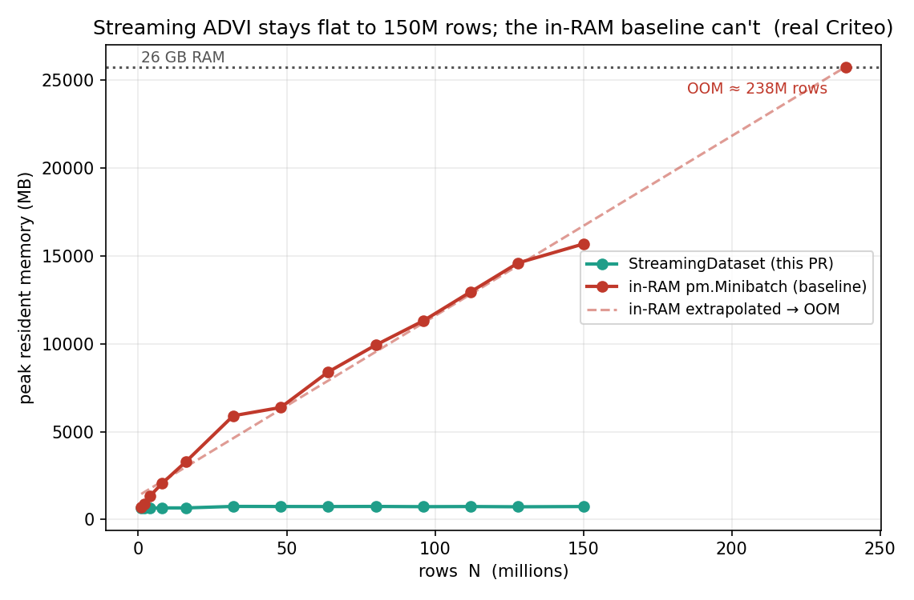

Last week I got minibatch ADVI to stream data from disk. This week was mostly about the design rather than the code. I had a review with my mentors, Rob and Chris, and the short version is that the thing I had built was already a data loader — I just hadn't named it like one.
The feedback: it's basically a DataLoader
Rob's first point was that my StreamingDataset looked almost exactly
like PyTorch's DataLoader, and there was no reason to invent new
names for an idea people already know. So the source of rows became an
IterableDataset, and the object that batches and shuffles it became
a DataLoader. Same words, same mental model, nothing new to learn.
His second point was the callbacks. To advance the stream each step, the user
had to pass callbacks=[ds.fit_callback()] into pm.fit.
That leaks the training loop into user code, and it reads badly. The fix is a
Trainer, in the style of PyTorch Lightning: it owns the loop and
advances the data itself, so the user-facing API has no callbacks at all.
The third point was an open question — could total_size leave
the model entirely? You pass it to the likelihood so the minibatch
log-likelihood gets rescaled by N / batch_size, but it's an awkward
thing to have leaking into the model. A design note from Jesse Grabowski, another
PyMC dev, already had the answer: the loader is sized, so N is just
len(loader), and the data reaches the model through a
pm.Data placeholder that the trainer refills each step. The model
never has to know the loader exists.
What the API looks like now
Putting those together: the model declares a pm.Data placeholder,
reads it like any other data, and passes total_size=len(loader). The
Trainer streams minibatches into that placeholder with
set_data. There are no callbacks.
from pymc.variational.streaming import (
DataLoader, Trainer, parquet_source,
)
loader = DataLoader(
parquet_source("criteo/"),
batch_size=4096,
sample_shape=(14,), # 13 features + label
total_size="auto", # len(loader) == N
)
with pm.Model() as model:
b = pm.Normal("b", 0.0, 1.5, shape=14)
batch = pm.Data("batch", np.zeros((4096, 14))) # placeholder
logit = b[0] + pm.math.dot(batch[:, :13], b[1:])
pm.Bernoulli(
"click",
logit_p=logit,
observed=batch[:, 13],
total_size=len(loader),
)
# no callbacks: the Trainer feeds "batch" each step
approx = Trainer(
method="advi", dataloader=loader, data_name="batch"
).fit(20_000)
Checking it on public data: Criteo
The Week 2 results were on 122 GB of Kalshi order-book data I had recorded myself. That's fine for me, but nobody else can rerun it, and for a library feature the result should be reproducible. So I re-ran on the Criteo 1TB Click Logs, the standard public benchmark for out-of-core learning. It's binary classification — was an ad clicked — which is the same logistic regression I had been fitting, just with different columns.
I streamed a million real rows straight from Hugging Face, without downloading
the whole thing, through parquet_source → DataLoader
→ Trainer, and compared the ADVI posterior to an ordinary
in-memory scikit-learn logistic fit on the same rows. The coefficients line up:
correlation 0.999 across all 14, and the intercept (−3.62) is just the
logit of the 3.3% click rate. The streaming path isn't doing anything strange
— it recovers the same model an in-memory fit would.
It lines up with the in-RAM pm.Minibatch baseline too — the
standard approach when the data does fit — coefficient for coefficient:

pm.Minibatch baseline, on 1,000,000 Criteo rows. They agree coefficient for coefficient (max |Δ| = 0.12, on the −3.62 intercept); the small gaps are just the difference between two independent stochastic ADVI runs.Memory stays flat; the baseline runs out
The point of all of this is memory. I swept N from 1 to 150 million
rows and measured peak resident memory two ways: streaming through the
DataLoader, and the in-RAM pm.Minibatch baseline that
keeps every row resident. Streaming stays flat at about 0.7 GB the whole way. The
in-RAM baseline climbs linearly — 15.7 GB at 150 million rows, about
21× more — and at that slope the line runs out of this machine's 26 GB
around 238 million rows. Streaming never gets there.

pm.Minibatch baseline rises linearly to 15.7 GB (21× more) and the dotted extrapolation hits this machine's 26 GB ceiling around 238 million rows. Everything up to 150M is measured; only the out-of-memory point is extrapolated — and unlike last week's Kalshi figure, anyone can reproduce this one.What's next
Next I'll open the draft PR for my mentors to review, and sort out where the example data should live — the feature table is only a couple of GB, so Hugging Face is the likely home. After that I want to look at a Dask integration, starting with the boring but necessary question of whether Dask is still actively maintained before building against it.
Links. GSoC project page · PyMC source · Criteo 1TB Click Logs · Mentors @zaxtax · @fonnesbeck